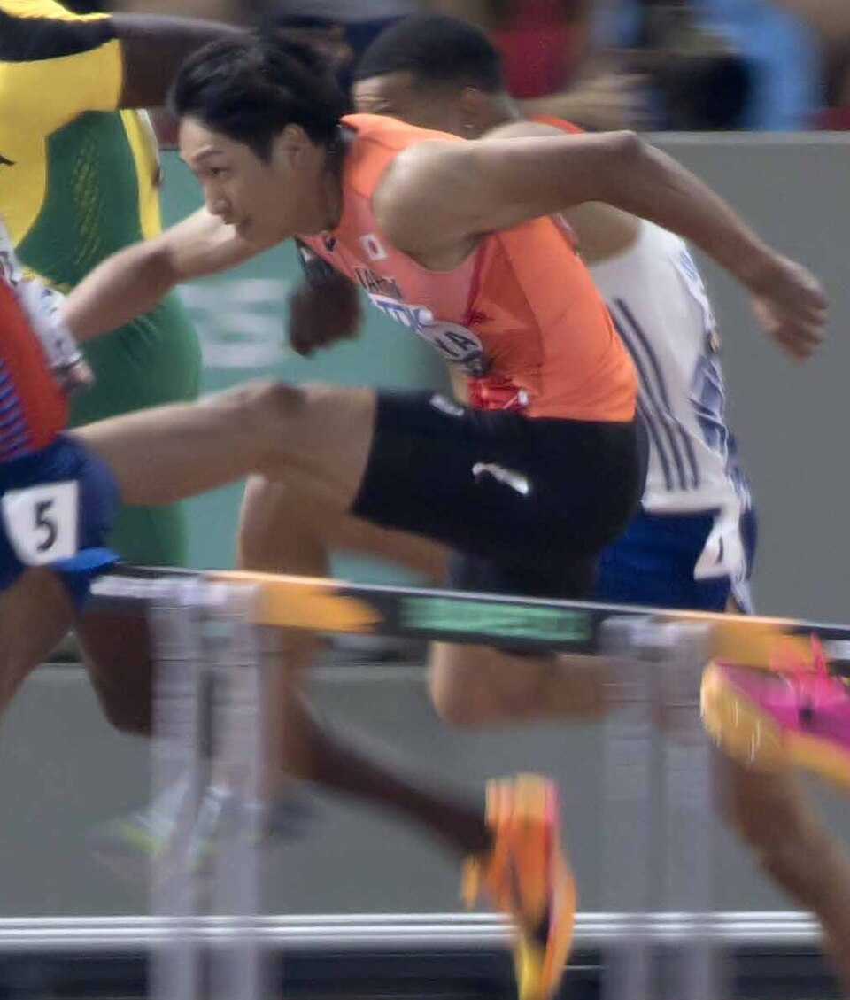

陸上競技
•
陸上 / 男子110mハードル
いずみや しゅんすけ
泉谷 駿介
Shunsuke Izumiya
🏢 所属: 住友電工
🏅 ブダペスト世界陸上5位入賞🏅 ダイヤモンドリーグ日本人初制覇🏅 日本記録保持者(13秒04)
研ぎ澄まされた跳躍力と世界屈指のハードリング技術。アジア最速のハードラー
愛知・名古屋2026 今大会最終結果
予選1着突破・準決勝進出決定🔥
予選タイム: 13秒24（向かい風0.4m）
【最新】本日行われた110mH予選に出場。鋭い踏切と高速インターバル走で他を寄せ付けず13秒24で余裕の1着通過。明日の準決勝・決勝に挑む。
🎬 最後のシーン（決定的瞬間・ハイライト）
第1ハードルからトップに立ち、後半は余力を残してゴールした貫禄のレース展開。
▶️ 【YouTube】110mH予選 流れるようなハードリングで組1着通過の瞬間 を見る
📊 公式トーナメント表・競技記録速報（Draw/Results）
男子110mH 予選公式タイムシート＆組別着順詳細
📊 【日本陸上競技連盟 (JAAF) / World Athletics】JAAF公式 大会リザルト速報 を見る ➔
経歴・これまでの歩み
武相高校から順天堂大学へ進学。元々は三段跳など跳躍種目でも全国トップクラスの跳躍力を誇る。110mHに専念すると才能が一気に開花し、2021年に13秒06の日本新を樹立。2023年にはローザンヌで行われたダイヤモンドリーグで日本人初の優勝を果たし、ブダペスト世界陸上でも5位入賞を果たした。
主要大会ハイライト戦績
2024年
パリオリンピック
110mH 準決勝進出
2023年
世界陸上ブダペスト
110mH 5位入賞（日本人初快挙）
2023年
DLローザンヌ
優勝（日本人男子トラック種目初）
2023年
日本選手権
3連覇達成（13秒04 日本新記録）
プレイスタイル＆世界を制する武器
三段跳で培われた驚異のバネと、ハードルすれすれを低く鋭くクリアするタイトな踏切・着地動作。インターバルの3歩のリズムが極めて正確で、後半の減速がほとんどありません。
専門家・メディアによる客観的分析・批評
✨
強み・世界トップ水準の評価
三段跳で培われた驚異の跳躍力と、ハードルすれすれを低く鋭くクリアする『インターバル3歩の接地速度』は世界トップ選手と比較しても最速水準にあります。
出典・ソース:
為末大氏（世界陸上銅メダリスト） / 日本陸連強化委員会
⚠️
課題・懸念される客観的事実
プレッシャーのかかる国際大会の決勝などで、ハードルへのアプローチがわずかに狂った際に身体のブレを立て直せずタイムを落とすケースが見られます。
出典・ソース:
日刊スポーツ陸上担当記者レビュー
愛知・名古屋2026への決意とメッセージ
大会スケジュール＆観戦のツボ
🗓️ 出場予定日程・会場
2026年10月1日 予選 / 10月2日 決勝（パロマ瑞穂スタジアム）
👀 観戦の注目ポイント
わずか13秒前後の間に10台のハードルを電光石火の速さで越えていくスリルと、空中での美しい姿勢・足の引きつけに注目。